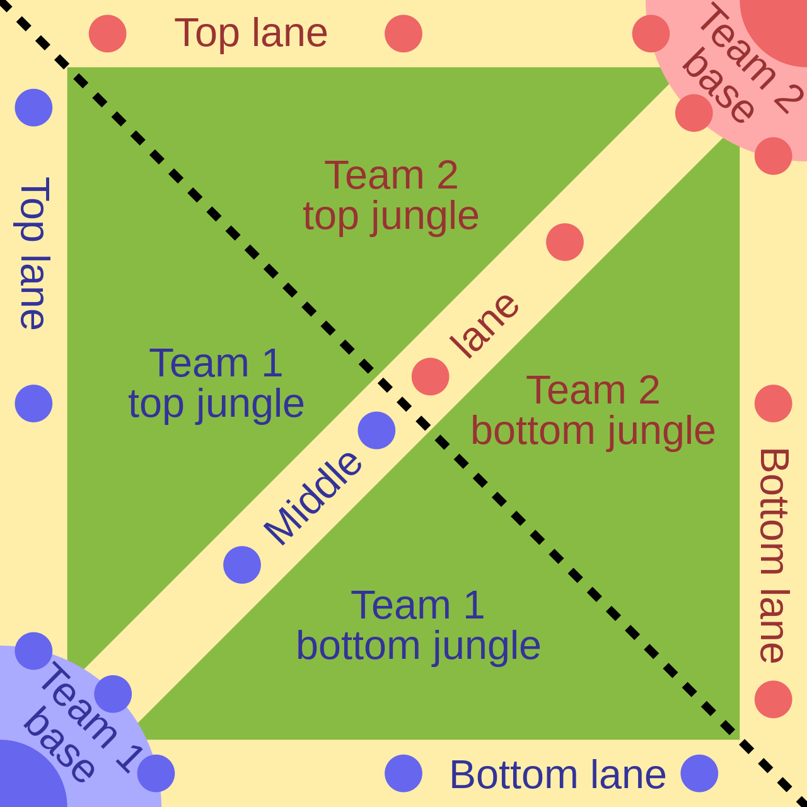

|
League of Legends (también conocido por sus siglas LoL ), es un videojuego multijugador de arena de batalla en línea desarrollado y publicado por Riot Games. Inspirándose en Defense of the Ancients, un mapa personalizado para Warcraft III, los fundadores de Riot buscaron desarrollar un juego independiente del mismo género. Desde su lanzamiento en octubre de 2009, LoL ha sido un juego gratuito y se monetiza a través de la compra de elementos para la personalización de personajes. El juego está disponible para Microsoft Windows y macOS. En el juego, dos equipos de cinco jugadores luchan en un combate jugador contra jugador, cada equipo ocupando y defendiendo su mitad del mapa. Cada uno de los diez jugadores controla un personaje, conocido como "campeón", con habilidades únicas y diferentes estilos de juego. Durante una partida, los campeones se vuelven más poderosos acumulando puntos de experiencia y ganando oro que se emplea para la compra de artículos para derrotar al equipo contrario. En el modo principal de juego de LoL, League, "La Grieta del Invocador", un equipo gana al abrirse paso hasta la base enemiga y destruir su "nexo", una gran estructura ubicada dentro de la cual se emanan tres líneas de súbditos o "minions", personajes no jugadores que al ser eliminados por el equipo enemigo otorgan oro y experiencia. League of Legends ha recibido críticas generalmente positivas; los críticos destacaron su accesibilidad, diseños de personajes y valor de producción. La larga antigüedad del juego ha resultado en una reevaluación crítica, con reseñas con una tendencia positiva; el comportamiento negativo y abusivo de sus jugadores en el juego, criticado desde su lanzamiento, persiste a pesar de los intentos de Riot por solucionar el problema. En 2019, LoL alcanzó regularmente un máximo de ocho millones de jugadores simultáneos, y su popularidad ha llevado a vinculaciones como videos musicales, cómics, cuentos y hasta una serie animada de Netflix, Arcane. Su éxito también ha generado varios videojuegos derivados, incluida una versión móvil, un juego de cartas coleccionables digital y un juego de rol por turnos, entre otros. Se está desarrollando un juego de rol multijugador masivo en línea basado en LoL. Citado regularmente como el deporte electrónico más grande del mundo, el juego tiene una escena competitiva internacional que consta de 12 ligas. Estas ligas locales culminan en el Campeonato Mundial anual de League of Legends. El evento de 2019 registró más de 100 millones de espectadores únicos, alcanzando un máximo de 44 millones de espectadores simultáneos durante la final. Los eventos nacionales e internacionales se han transmitido en sitios web de transmisión en vivo como Twitch, YouTube, Bilibili y en el canal de deportes de televisión por cable ESPN.  |